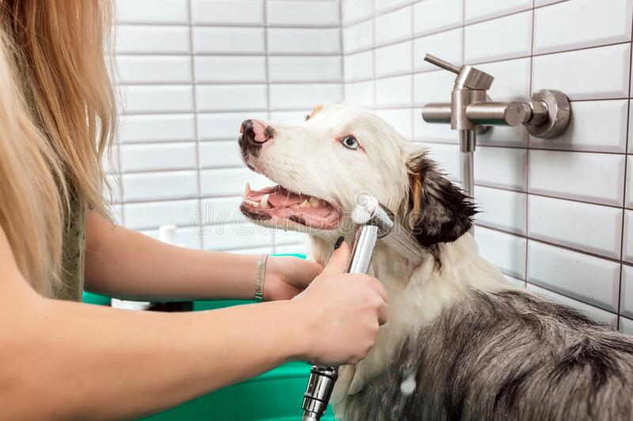
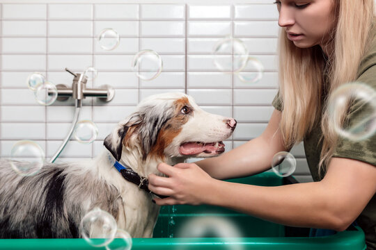
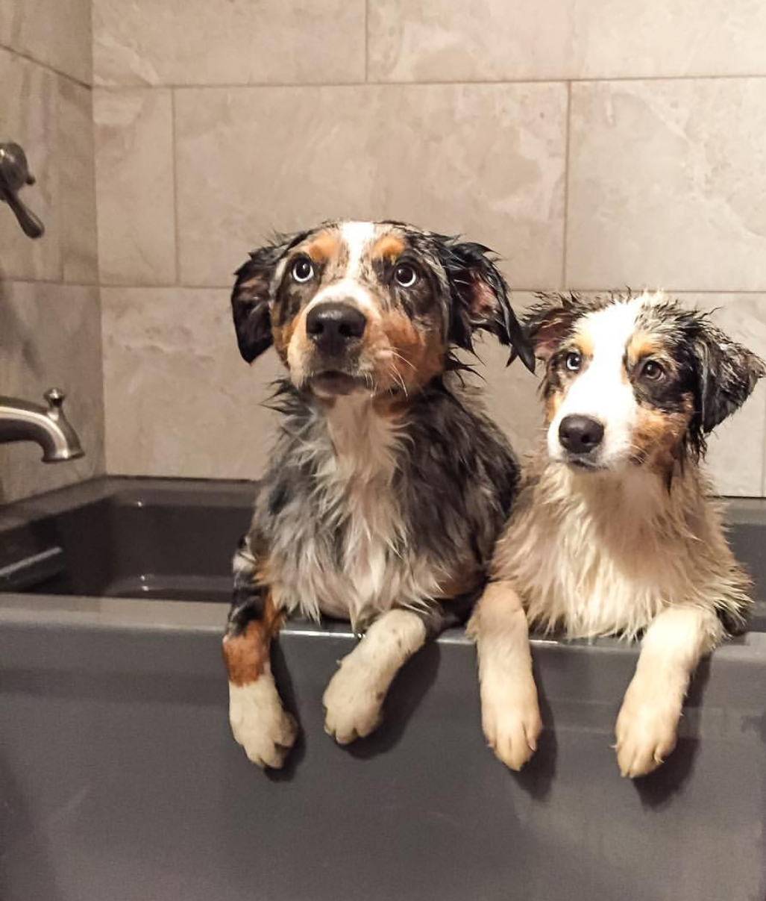
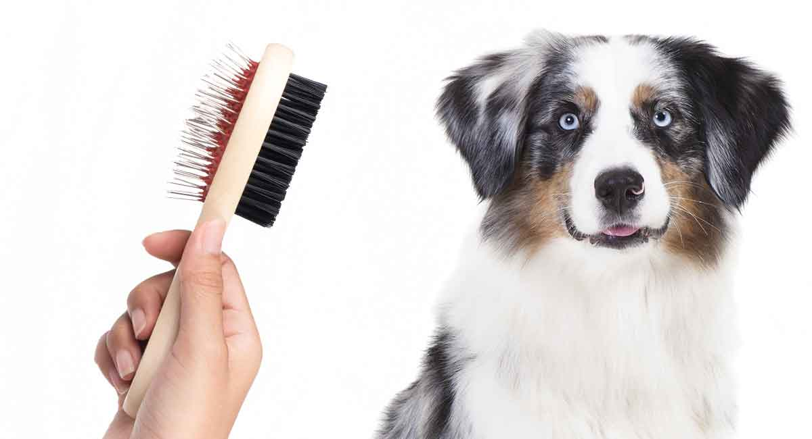
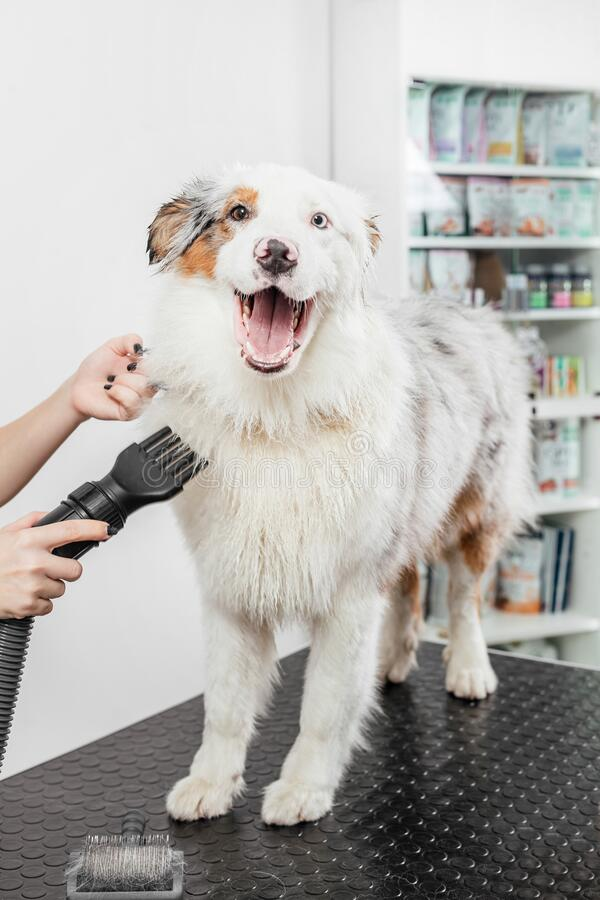
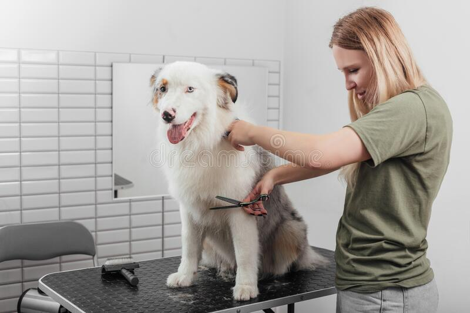
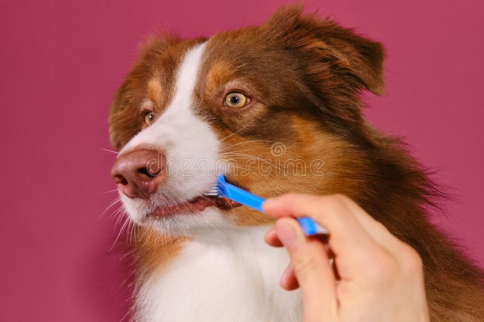
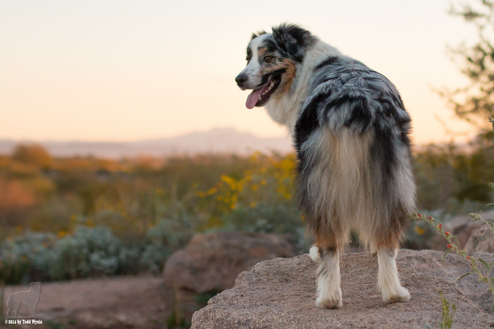

They Know How to Handle Dogs
Dogs who are old or become anxious or aggressive when you try to groom them must be handled gently and confidently, and some may need to be muzzled while being groomed – something a groomer can do. If you have a condition such as back pain or arthritis, professional grooming can help by preventing you from having to do excessive lifting and handling of your dog.
| Grooming service options | |||
|---|---|---|---|
| Services | price | ||
|  | Bath | This service include: Bath using a high quality shampoo and conditioner, Blow Dry and Brush. | $60 |
 |
Full Grooming | This service include:Bath Using a high quality shampoo and conditioner, Blow Dry, Brush, Haircut, Brushing Teeth, Nail Cut Anal Gland Extract. | $120 |
|  | Spa | This service include: Full Grooming, Bubble Bath, Massage, and coconut oil conditioner. | $180 |
|  | Self Grooming | This service include: The sation for bath and grooming, towel, Shampoo and Conditioner. | $25 |
|  | Brush | This service include: Brushing and deshedding. | $10 |
|  | Blow Dry | This service include: high velocity blow dryer. | $5 |
|  | Haircut | This service include: Haircut with the stlye that you request. | $25 and may vary depends on the length of the fur/hair |
|  | Brushing Teeth | This service include: Brushing Teeth | $10 |
 |
Nail Cut | This service include: Cut nails and Grinding. | $10 |
|  | Anal Gland Extract | This service include: Anal Gland Extarction and Cleaning it. | $10 | For any other information and inquaries, please contact us at dogslife@gmail.com or 332582207 |
Professional groomers have all the right tools to get your dog looking his best, from different kinds of clippers and rounded scissors to an adjustable grooming table. They’re equipped with nontoxic, gentle shampoos for dogs with skin allergies or irritations, or those with fleas.
Many groomers also know how to groom for breed show cuts, which requires precise attention to detail and knowledge of the specific breed requirements. Different coats require different brushes – and groomers have them. The more dead hair they remove from your dog, the less you’ll find on your living room rug.